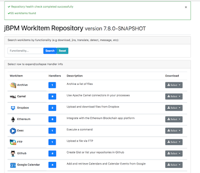
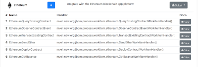
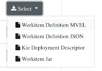
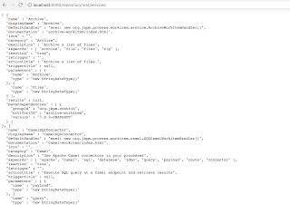

jBPM WorkItem Repository updates
Wanted to share some recent updates to the jBPM WorkItem Repository
1. Visual updates: the repository home page includes alot more information about workitems in the repository
 |
| Updated repo index page |
Each row now displays the number of workitem handlers it includes. Also each row can be selected to display the handlers information and link to the handlers documentation page:
 |
| Workitem Handler information |
The text download links have been replaced with a dropdown so if you extend the repository for your own needs you easily add more items to the dropdown:
 |
| Downloads dropdown |
2. Functionality Search: Often users won’t know what all they can do with workitems in the repository by just looking at their names alone. We have included a functionality search where you can search for actual functionalities you wish to include in your business processes, for example “upload”, “detect”, “send message” etc. The search then filters only the workitems in the repository which can perform this functionality:
3. WildFly repository module: Similar to the repository-springboot module we have now added a repository-wildfly module as well. This module builds a wildfly war as well as an out-of-the-box zip distribution that includes WildFly 11 and the repository already installed. For more info on how to set this up and use it see here.
4. Repository rest api: If you are running your workitem repository with Spring Boot or WildFly the repository exposes a rest api for you. The currently implemented endpoints include:
/rest/services
/rest/services/{name}
/rest/services/{name}/parameters
/rest/services/{name}/results
/rest/services/{name}/mavendepends
/rest/services/category/{category}
/rest/servicetriggers
/rest/servicetriggers/count
/rest/serviceactions
/rest/serviceactions/count
and more can be easily added. Currently the response type of all these endpoints is application/json.
 |
| Sample results of repository rest api |
The hope is that community can easily build client-side apps like installers etc that can consume and utilize the repository info.
That’s it for now. We are looking to further improve the workitem repository and add a lot more to it. As always any help from our great jBPM community is more than welcome.

{kind=link}
{kind=link}
{kind=link}
{kind=link}
{kind=link}